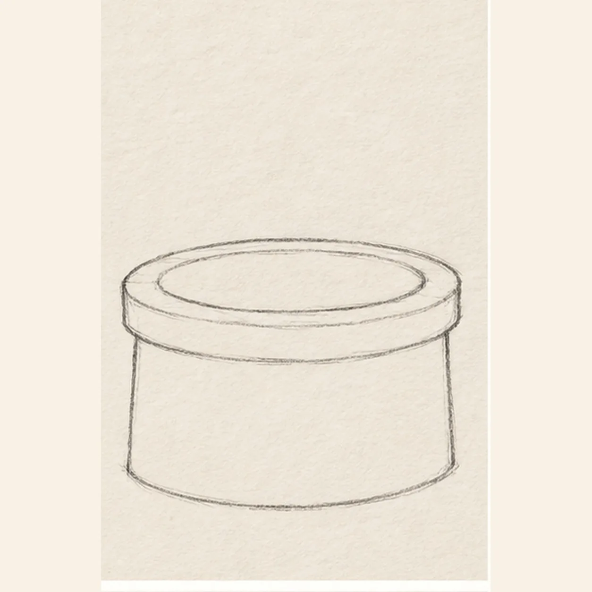
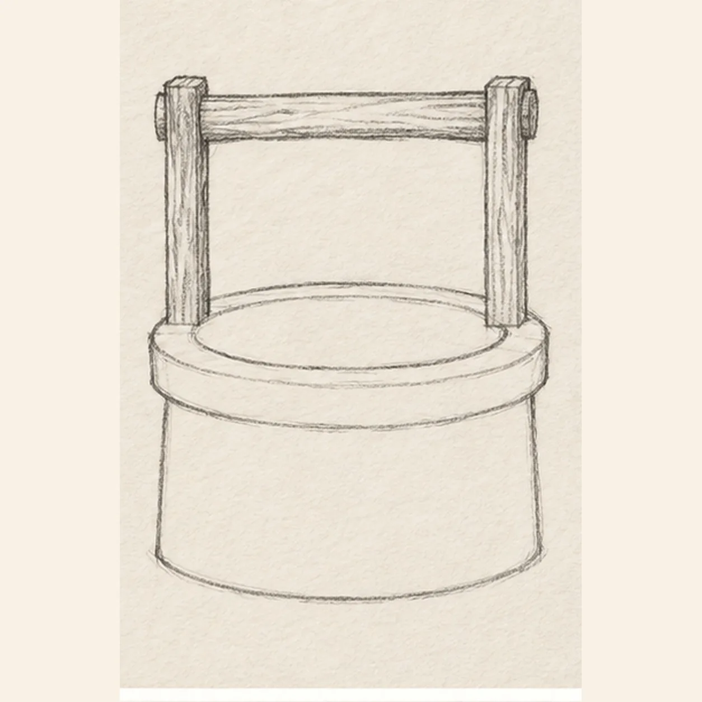
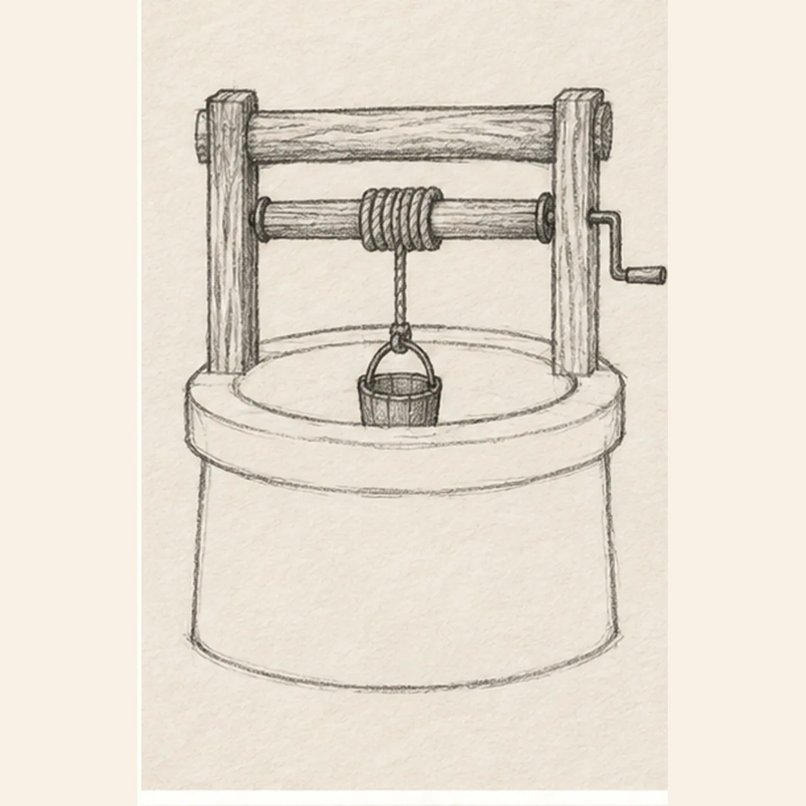
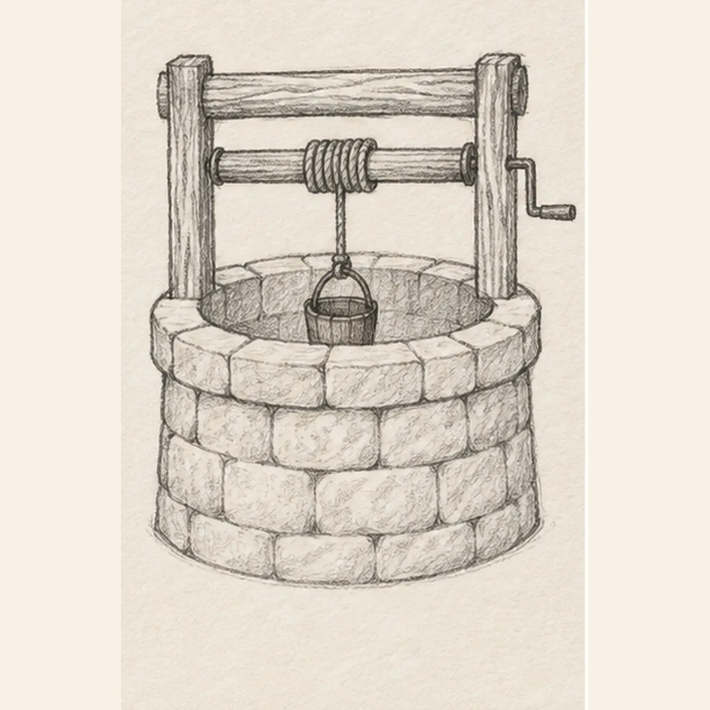
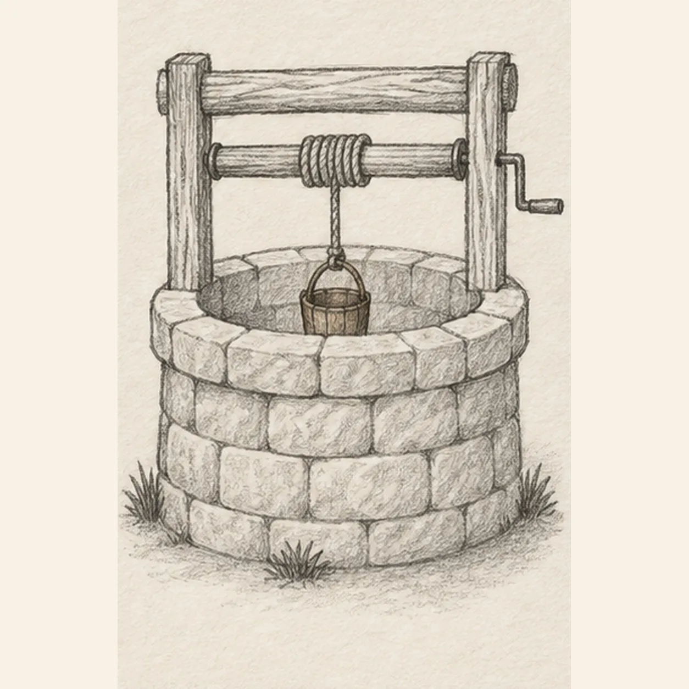

From the archive
Let's draw an old stone well
Treat this as one small practice round: build the subject lightly, notice the shapes, then darken only the lines that help the finished sketch.
-
01

Shape the well opening
Draw one wide shallow oval, echo its lower edge to make the thick stone rim, then drop two short sides and join them with one curved lower edge for the wall.
Sketch tip: Ghost the oval twice before touching down. Compare the open center with the outer rim so the stone ring keeps an even thickness.
-
02

Raise the timber frame
From behind the left and right rim edges, raise exactly two upright posts and bridge their tops with one thick horizontal beam. Stop every hidden post line at the stone rim.
Sketch tip: Check that both posts meet the back half of the rim and lean neither inward nor outward. The beam should touch both posts without floating.
-
03

Hang the bucket
Run one spindle between the posts, bend one short crank from its right end, drop one rope from the spindle center, and attach the rope to one small bucket hanging inside the oval opening.
Sketch tip: Trace the connection from left post to spindle, rope, bucket handle, and bucket. Keep the bucket centered below the rope and partly inside the opening.
-
04

Build the stone and wood texture
Divide the wall into broad staggered stones, split the rim into chunky blocks, and pull a few grain lines along both posts and the top beam without crossing the rope or bucket.
Sketch tip: Offset each stone row like brickwork and vary the block widths. Use long grain strokes with the timber and shorter curved hatching across the stones.
-
05

Ground the old well
Place exactly three small grass tufts around the base and one soft broken shadow beneath the wall. Keep the crank, rope, bucket, masonry joints, and timber connections fully readable.
Sketch tip: Group one tuft at the left, one near the center front, and one at the right. Use the side of the pencil for a light shadow instead of outlining it.
-
06

Shade the weathered well
Layer warm gray over the established stones, brown along the timber and bucket, muted green through the same three grass tufts, and cool graphite inside the opening and existing shadow. Add no new contours.
Sketch tip: Pull brown strokes with the wood grain and curve gray strokes around the wall. Count two posts, one crank, one rope, one bucket, and three grass tufts, then stop while the paper tooth still shows.


![Handmade graphite and restrained colored-pencil sketch of one left-facing pirate sailing ship with one warm-brown curved wooden hull, one blank stern cabin, one center mast, exactly two square cool-gray sails with two curved seams each, one forked muted-red pennant, one diagonal bowsprit, exactly three taut rigging lines, exactly three round hull portholes, exactly three broken desaturated-blue wave bands, exactly two cool-gray cloud wisps, exactly two open-paper sail highlights, and visible paper tooth](../assets/pirate-sailing-ship-at-sea-finished-v1.webp)